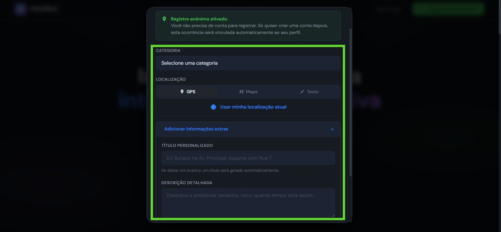
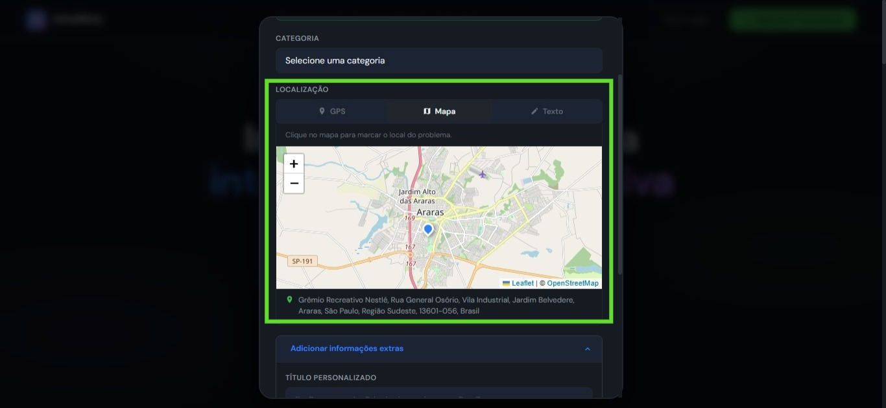
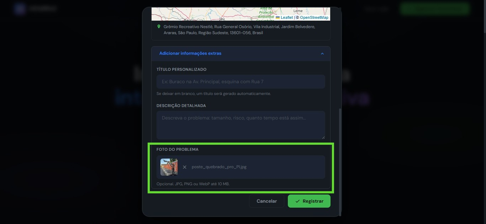
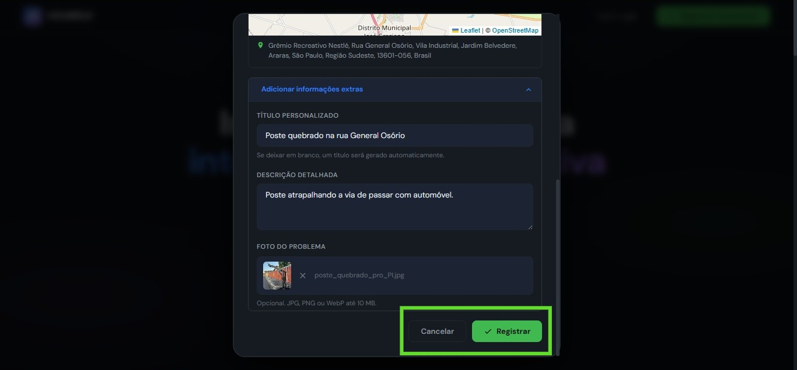
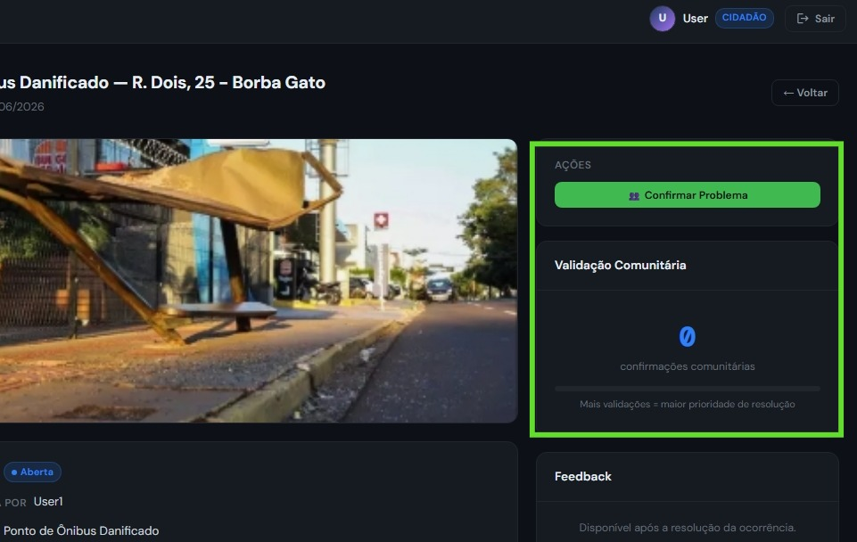
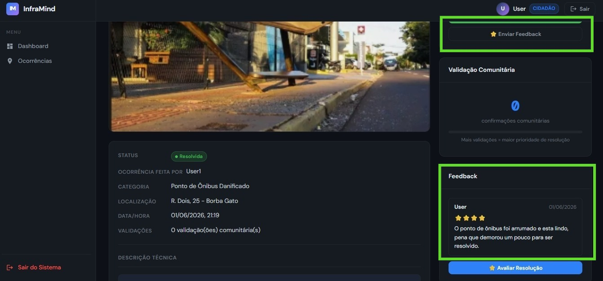

Veja como uma ocorrência urbana percorre o sistema — desde o relato do cidadão até a confirmação de resolução, com análise por Inteligência Artificial em cada etapa.
Sem login para registrar ocorrências — comece agora mesmo
O sistema conecta cidadãos e gestores públicos em um fluxo contínuo — qualquer pessoa pode reportar, a comunidade valida e o administrador resolve.
Qualquer pessoa encontra um problema de infraestrutura — um buraco, poste caído, lixo acumulado — e registra pelo InfraMind com título, descrição, endereço e fotos. Não é necessário ter uma conta.
O Google Gemini analisa o título e descrição em segundos: calcula um score de urgência de 0 a 100, classifica o nível (baixa, média, alta, crítica) e verifica se é uma duplicata de outra ocorrência próxima registrada antes.
Outros moradores que viram o mesmo problema podem confirmar a ocorrência. Cada validação aumenta a prioridade dinâmica do problema — quanto mais gente confirma, mais rápido o administrador é acionado.
O gestor acessa o painel administrativo, vê todas as ocorrências ordenadas por prioridade (IA + validações + tempo aberta), define o nível de importância (🟢 Normal · 🟡 Atenção · 🔴 Urgente) e atualiza o status conforme avança a resolução.
Após o status ser marcado como Resolvida, cidadãos com conta podem enviar um feedback com nota de 1 a 5 estrelas e comentário. O administrador também pode publicar atualizações oficiais sobre o andamento.
Cada ocorrência percorre estes quatro estados. O administrador atualiza manualmente conforme a situação evolui no campo.
Problema registrado,
aguardando triagem
Equipe acionada,
serviço em execução
Problema solucionado,
feedback habilitado
Ciclo encerrado,
registro arquivado
Cada mudança de status é registrada no histórico com data, hora e responsável.
Siga estes passos para registrar um problema urbano no InfraMind. O processo leva menos de 2 minutos.
Na página inicial do InfraMind, clique no botão verde "Registrar Ocorrência". Ele aparece tanto no topo da página quanto no centro da tela. Você não precisa ter uma conta para continuar.
Captura de tela da landing page
landing.html — hero com botão "Registrar"Um painel desliza na tela. Preencha o título (Opcional), selecione a categoria, informe o endereço e escreva uma descrição (Opcional, mas recomendado) detalhada do problema.

Modal de registro de ocorrência
landing.html — modal com formulário abertoNa plataforma completa, você pode usar o GPS do seu dispositivo, digitar o endereço no campo e clicar em "Buscar no mapa", ou simplesmente clicar no mapa para marcar o ponto exato do problema.

Mapa Leaflet com marcador de localização
index.html — seção do mapa no formulário de criaçãoAdicione uma ou mais fotos do problema. Basta clicar na área de upload ou arrastar as imagens. Fotos aumentam a credibilidade da ocorrência e auxiliam o administrador na avaliação.

Área de upload de imagens com pré-visualização
index.html — drag & drop de fotosClique em "Registrar Ocorrência". O sistema salva tudo e redireciona para a página de detalhes. Lá você vê o status atual, as validações da comunidade e o histórico completo de atualizações.

Tela de detalhes da ocorrência registrada
index.html — página de detalhe com status e históricoSe você viu o mesmo problema que outro cidadão já reportou, clique em "Confirmar Problema" na página de detalhes. Isso aumenta a prioridade da ocorrência e acelera a resposta do administrador.

Card de validação comunitária na página de detalhes
index.html — botão "Confirmar Problema" + contadorQuando o administrador marca a ocorrência como Resolvida, o ciclo completo fica registrado para consulta e avaliação.
O status muda para Resolvida. O data e hora de resolução são registrados automaticamente.
Cidadãos com conta podem avaliar a resolução com nota de 1 a 5 estrelas e comentário sobre o serviço prestado.
Cada mudança de status fica no histórico com data, hora e usuário responsável. Total rastreabilidade de ponta a ponta.
O tempo real de resolução é calculado automaticamente e alimenta os indicadores do painel administrativo para análise contínua.

Tela de detalhes com status "Resolvida" + card de feedback + histórico completo
index.html — detalhe após resolução pelo adminRegistre um problema na sua cidade agora mesmo — sem precisar criar conta. Se quiser acompanhar, validar e dar feedback, crie seu perfil em segundos.